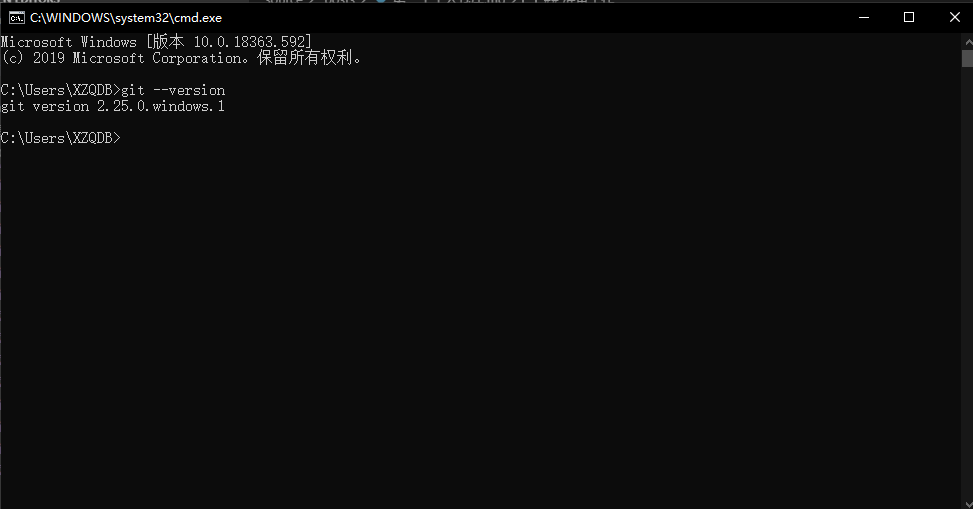
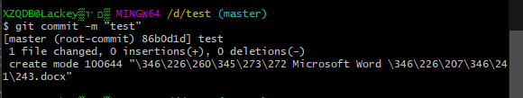

个人仓库
Git 是一个开源的分布式版本控制系统，用于敏捷高效地处理任何或小或大的项目。
而仓库就是存放项目代码的地方。
作为一名学生，没什么大项目，纯粹当网盘用，当然git还是非常实用的，强烈推荐大家可以学习实用。教程在此
以下内容将以gitee为例，github也差不多。毕竟国内gitee速度快些，当然要找项目还是上github，gitee也有fork github项目的功能还是不错的。
注意！本作者为小白，单纯和大家分享交流，不喜勿喷，如有错误请指正，如果能帮上零基础的朋友就最好了！
环境
Windows 10 专业版 1909 64位
准备工作
下载git的安装包并安装
- 安装时会自动添加环境变量安装完成后可直接在cmd中使用，可以输入git –version来确认是否安装完成。如图会显示git的版本信息
- 提一下安装时会提示你选择编辑器这里个人推荐选择notepad++，一款很好用的文档编辑器
创建本地仓库
git设置
先在cmd中进行一下git的设置，编辑好自己的用户名和邮箱
1
2
3
4
5
6
7
8git config --global user.name "用户名"
git config --global user.email "邮箱"
```
配置完成可以使用命令来查看是否配置正确
```bash
git config --list初始化一个本地仓库
在本地合适的位置新建文件夹,之后你可以在文件夹内空白处右键Git bash here
或者用cmd移动到该文件夹内，输入以下命令1
git init
这时该文件夹内就会出现一个隐藏的名为.git 的子目录，这时你的仓库就初始化完成了
注意！不要乱动这个文件夹内的任何文件向仓库添加文件并提交
在该文件夹新建一个任意文件，然后在git bash或cmd中执行命令(一定要在仓库文件夹路径下执行命令)
1
2git add -A
git commit -m "注释"出现如下图所示即向仓库添加文件成功
更多git的相关操作教程大家可以移步他处，我是看的廖雪峰的教程新建远程仓库并建立连接